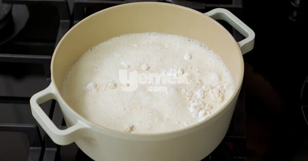
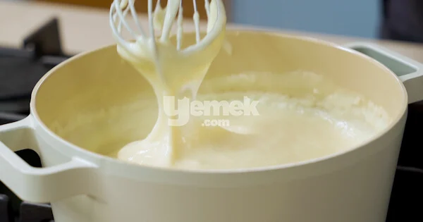
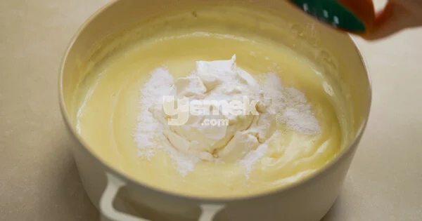
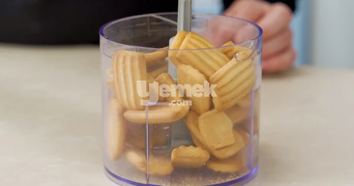
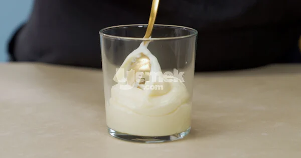
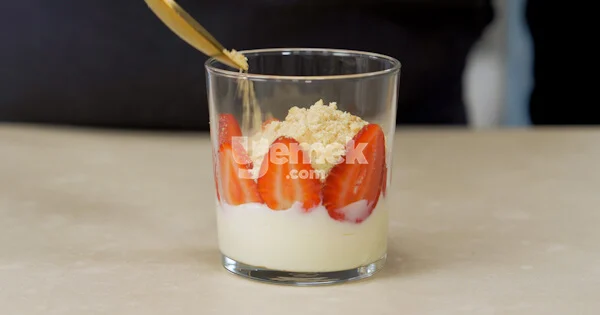
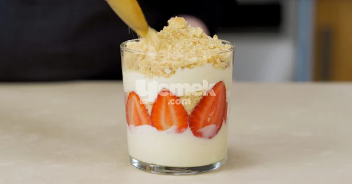
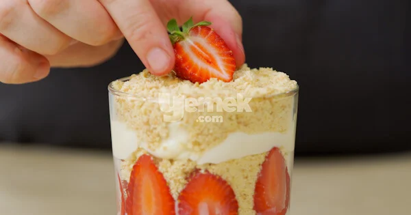

Magnolia Tarifi İçin Malzemeler
- 5
su bardağı
süt
- 1
su bardağı
toz şeker
- 1
su bardağı
toz şeker
- 1
adet
yumurta sarısı
- 2
yemek kaşığı
nişasta (mısır veya buğday nişastası)
- 2
yemek kaşığı
un
- 1,5
çay bardağı
krema
- 1
paket
bebe bisküvisi
- 15-20
adet
çilek
Magnolia Tarifi Nasıl Yapılır?
-

Bir tencerenin içerisine süt, şeker, nişasta, un ve yumurta sarısını aktarın. Güzelce karıştırın.
-

Orta ateşte, sürekli karıştırarak muhallebi kıvamına gelene dek pişirin.
- 
Ocaktan alıp vanilyayı ekleyin ve karıştırın. Ilımaya başlayan kremayı ilave ederek karıştırmaya devam edin.
-

Bu sırada bisküvileri rondodan geçirin. Çileklerin saplarını çıkararak dilediğiniz boyutlarda kesin.
-

Soğuyan pudinginizden birkaç kaşık alın. Bir kupun tabanına yayın.
-

Üzerine bisküvi ve çileklerden ilave ederek katlar çıkın.
- 
Tüm bisküvi, puding ve çilekler bitene kadar kuplara bu şekilde bölüştürün.
-

Ardından buzdolabında 3-4 saat kadar soğumaya bırakın. Servis aşamasında üzerini bisküvi, çilek ya da muz, çikolata sos gibi farklı malzemelerle süsleyerek servis edin
-
Magnolia tarifi hazır. Afiyet olsun!